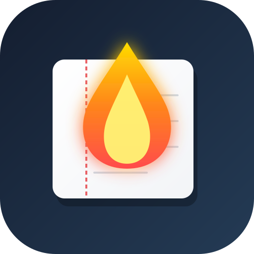
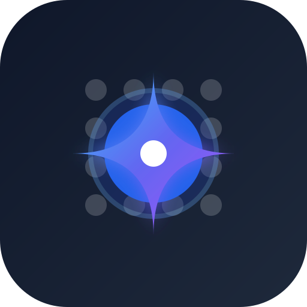
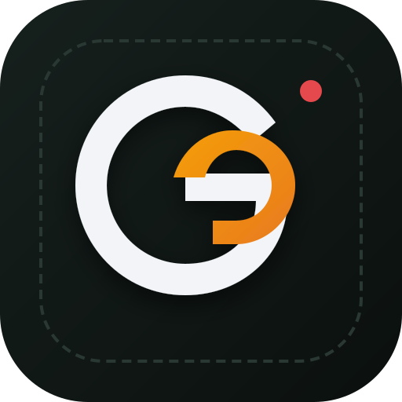

Uygulamana dokunulmadan, yalnızca fikir vermesi ve zihninde canlanması için oluşturulmuş 3 özel konsept tasarımı.

Kareli defter yaprağı ve kırmızı marj çizgisi üzerinden yükselen parlak seri ateşi. Hem YKS defter hissini hem de Duolingo'nun alışkanlık enerjisini birleştirir.

ÖSYM optik kodlama baloncuğunun merkezinden fırlayan dört köşeli kutup yıldızı. Hedefe odaklanmayı ve sınav başarasını simgeler.

İkili 'G' harfinin sonsuz gelişim halkası formunda iç içe geçmesi, mühür şeklinde kırmızı detay ve koyu kâğıt dokusuyla olgun bir kimlik sunar.